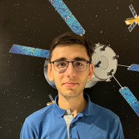

I am a first-year PhD student at the French National Centre for Space Studies (CNES) and the Laboratory for Analysis and Architecture of Systems (LAAS-CNRS), affiliated with INSA Toulouse.
My research is centered on Anomaly Detection in Satellite Telemetry, with a specific focus on developing an explainable method based on the Christoffel function to detect anomalies in multivariate time series. This work has direct applications in enhancing the reliability and safety of satellite operations.
My research is supervised by Louise Travé-Massuyès, Didier Henrion, and Jean-Bernard Lasserre from LAAS-CNRS. Additionally, I am supported by my industrial co-applicants, Lionel Vintenat and Clément Hinderer from CNES.
F. Grivet and L. Travé-Massuyès, Cost trade-offs in matrix inversion updates for streaming outlier
detection. Array (2026), doi:
https://doi.org/10.1016/j.array.2026.100737.
F. Grivet, L. Travé-Massuyès, D. Henrion, J.-B. Lasserre, L. Vintenat, and C. Hinderer, Christoffel
Function based Anomaly Detection for Satellite Telemetry. ANITI Days 2026, Feb 2026, Toulouse, France.(hal-05521204).
Topic:
Christoffel Function based Anomaly Detection for Satellite Telemetry.
Supervisor: Louise Travé-Massuyès. Co-supervisor: Didier Henrion.
Advisor: Jean-Bernard Lasserre. Industry advisors: Lionel Vintenat and Clément Hinderer.
Apprenticeship under the supervision of Lionel Vintenat.
• Improvement of a tool for detecting univariate anomalies in satellite telemetry based on a OCSVM (IHM,
performances, large scale deployment).
• Development and integration of a detection method that takes user feedback into account: semi-supervised
OCSVM.
• Development of a multivariate anomaly detection algorithm using a CNN autoencoder and an OCSVM with
algorithm explainability.
Double degree through work-study program.
• INSA degree specializing in
Applied Mathematics.
• INP-ENSEEIHT degree specializing in
Computer Science and Telecommunications
• Set up the new management and billing system
• Ensure compliance and consistency between the database (Excel), the new management system (Mytem), and
the operator portals (Orange, SFR, Bouygues Telecom)
Integrated preparatory course followed by specialization in the third year in Computer Modeling and Communication (MIC)